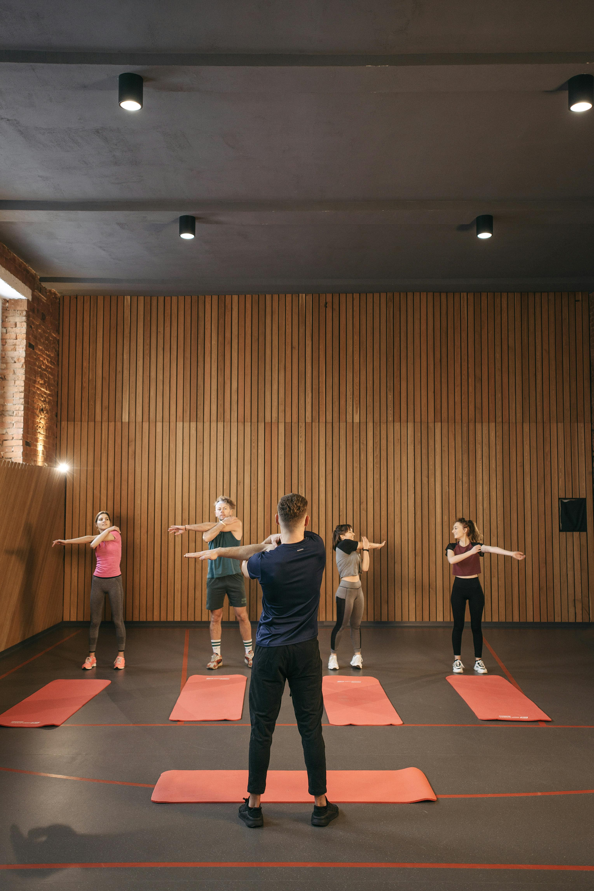

Beneficios del ejercicio

El ejercicio ayuda a mejorar la salud física y mental. También aumenta la energía y reduce el estrés académico.
Cómo manejar el estrés universitario
Organizar el tiempo y descansar adecuadamente ayuda a controlar el estrés universitario.
Importancia del descanso

Dormir bien mejora la memoria, la concentración y el rendimiento académico.